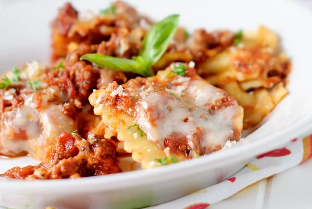

Lasagna

Mmm mmm yummy
This deliciously strange dish can be created by stuffing all manner of
ingredients into a slow cooker and waiting for magic to happen
Ingredients
- Turmeric 2 bootfuls
- JazzHands 3 cups
- Stinky cheese 1 bunch
Steps
- Find a big Bowl
- Fill with Turmeric and hold your breath
- shake those JazzHands furiously
- dump in that stanky cheese and step back to admire